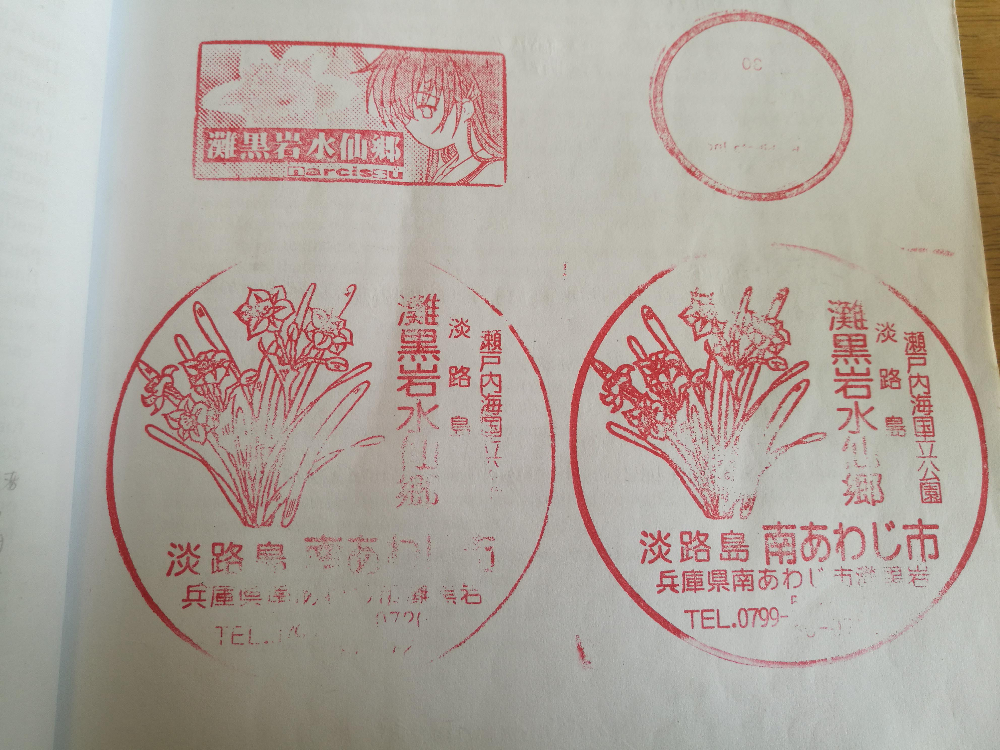
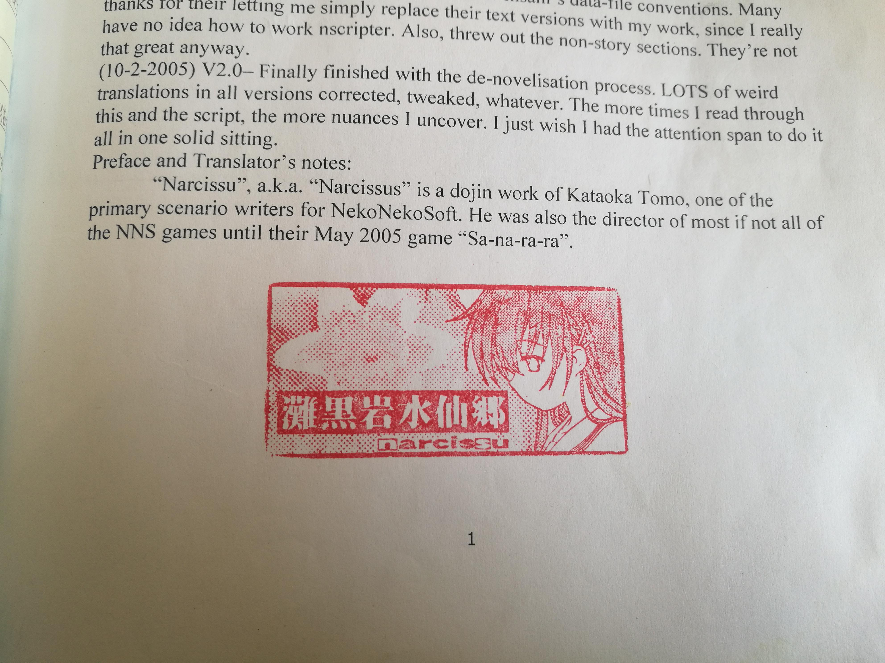

当时旅行结束先发在了贴吧里，后来才整理到博客里。
证
首先是签证，如果是本科、研究生在读或毕业三年以内，就可以免财产证明申请签证。 这个是第一个条件，不然的话好像要有十万财产证明。具体可以问某宝，他们更清楚，而且签证可以某宝办，大概几百块。 签证有效期是90天，出发的那一天一定要在90天内，我一开始不知道，差一天签证就过期了。这个在买机票的时候要注意一下，然后单次签证能在日本停留15天。
飞
先说机票吧，我买的乐桃，和同学两个人一款去，往返两个人总共3800。关于乐桃的问题，网上说好像是容易取消，反正我这次没遇到问题。 乐桃的机票分三个档位，如果不拉旅行箱，只背一个包，可以买最便宜的simple peach。 便宜机票的问题是如果取消航班不会给你退款，但便宜这一点就足够了。在其他平台上买不到乐桃的最低档，一定要去乐桃官网订。官网需要国际信用卡，没有的话，某宝上应该有代付的服务，可以查查。
住
住的话，我是在booking上订的，国内其他平台的选择太少了。 booking方便，酒店多，也能用支付宝。 我的行程路线是上海出发到大阪关西机场。 如果不嫌每天大阪淡路岛往返200多rmb的交通费贵，可以都住大阪，大阪的酒店有特别便宜的 不到100的青旅，当然也有很贵的。 淡路岛上酒店基本上都不便宜，而且同价位也远没有大阪酒店好。 我是在淡路岛上的洲本住了两晚，因为洲本距离滩黑岩最近，只有26公里。
行
如果按照我的路线，我从大阪到淡路岛要先坐jr到神户三之宫，然后坐大巴去。三之宫大巴到淡路岛洲本巴士中心，单程1890日元，不懂日语的话，买之前最好问问工作人员。我第一次就买错了，洲本巴士中心可以坐水仙巴士去滩黑岩。

这就是水仙巴士，其实就是面包车，可能是坐的人少，就改成了面包车。 司机七十多岁，还会一些英语，在日本旅游会一点英语就没问题。或者下个日语输入法和谷歌翻译，让对方打日语，再翻译成中文。这个是网友讲的方法，很天才。


我当天是九点从洲本的海月酒店出门,到洲本巴士中心坐这个面包车。10点15到滩黑岩，司机一开始圈错了，又拿了一张重新圈了一下。 蓝色是去，红色是回来。13点54坐同一辆车回来。往返2000日元。 谷歌地图的路线推荐也没这个水仙巴士。出门可以以换乘案内为主，谷歌地图为辅。 在日本的话，gps好像不太准，这个可能是我买的上网卡有问题。日本的4g信号也很不稳，在洲本住海月酒店的时候，晚上连4g或者wifi都没速度，一过零点就恢复了，我是买的上网卡，可能租借wifi会好一些。
以上就是我的路线，上海到大阪，早上九点到关西机场，第一天可以熟悉一下环境，第二天早上从淡路岛内出发，就能去滩黑岩。水仙乡是9点到4点半可以进，下雨的话，是真的开始下雨了才会关门。不过这个水仙巴士还会在雨天开放，下雨天就算进不去也可以在外面看看，因为水仙乡其实很小，在公路上就能看到靠海的那一面。进到里面的话，可以从山坡上往下看，景色更好。

今年没有关西机场到淡路岛的船了。理论上，如果早上九点到关西机场，完全可以在下午四点半之前到滩黑岩，然后回来坐十点回国的飞机。 这是极限路线，我没试过，理论上可以，但还是建议去三天，因为要避开下雨天。
骑
再来讲讲骑行路线，网上查淡路岛官网，语言切换到日语，就有租自行车的详细信息了，很便宜，但租的是买菜车。

这车三挡变速，变的好像还只是脚踏之间的齿轮，而不是后轮上的，不过骑起来还是比一般自行车强一点。 淡路岛有一个144km的环岛骑行路线。我住的地方离滩黑岩26km，我以为可以骑车去，所以第一天就去租车。在洲本巴士中心租的，其他地方也可以租。


这里是起点，洲本巴士中心附近的海滩。风景还行，海边真的是松树林。水仙中描述的沿途场景大多都是真实存在的。

租了三天，只有第一天骑得多。但是有一个很严重的问题，虽然只有26km，中间却有大概七八km的盘山公路。平路可以骑20km/h，盘山公路这种买菜车只能推着。当时一个小时时间推了不到两千米，也没手机信号了，浑身是汗。淡路岛很大，滩黑岩附近都是深山。

这是游客中心给的地图，有一个工作人员英语特别好，交流完全没问题。 图上标caution的那段夹在两端平路之间的山路有超过一半都是上坡，我就是在这里放弃了。 第二天坐水仙巴士去的水仙乡，路上还看到猴子中心跑出来的猴子。 第一天骑车回去路上还看到两只野猪卡在下水道里出不来了，当时太累，就没拍野猪。猴子拍了一下。

路上基本上都是野山，路边插着乱扔垃圾最高罚款1000万日元和判五年徒刑的牌子，但路边每一米都有垃圾。这点和洲本市还有大阪市的街道就不一样了，其他地方确实是很干净。 这段26km的路虽然没骑完，但也确实有意思，有空的话，可以早上出发试试。不过那天天气5到十几度，还能骑一身汗，天更冷的话就不推荐去了。 没有专业车辆或者身体素质的话，就算天好也不要轻易尝试，推车走七八公里的盘山路可能还没有走路走完全程快。
杂
岛内交通可能就是各种面包车，不能刷交通卡只能现金，淡路岛和一个县差不多大，地广人稀。可以百度淡路岛官网，切换到日文，里面有很详细的冬日旅游介绍，和车站放的旅游手册一模一样，冬天能去的地方也不少。
市内或者城际交通的话，icoca卡就很方便，但去淡路岛的大巴要买票，去的时候上车不查票，下车时查，回来的时候上下车都查票，有点奇怪。 icoca退卡好像只能在关西机场办理，这个要注意一下。 各种便利店都能用支付宝微信，有时候机器会坏，就没办法了，我遇到过一次。 去过一次一般超市，不能用支付宝微信，吃饭的话，游客少的店基本都只能用现金。 现金还是要准备的，在饭店吃饭或者坐大巴都需要用。 出发前最好准备好icoca卡和现金，虽然到机场也能办卡换现金，但还是在国内方便，不额外耽误时间。 上网两种选择，上网卡和租借wifi，上网卡可能是运营商的原因，很不稳定。 有时候网速只有0.0几mbps，租借wifi不清楚，可以试试。
这个是滩黑岩水仙乡的官网，具体的最新开花情况可以参考这个。

攻略大概就是这样了，可惜因为骑车累了一天和天气原因，没去看明石海峡大桥，不过在大巴上拍了照。
其实应该二月份去，如果可以的话，我准备明年二月再去一次，在岛上待三到五天。 二月份如果下雪的话，可能也就没有下雨天关门的问题了，就是不知道会不会有积雪盖住水仙花。想了解更多相关事项，我建了一个淡路岛旅行交流群，929025991，入群问题很简单。
景


以上是2020年1月14日拍摄的照片，这是一些拍的比较好的，去的那天下午有雨，天阴，光线不好，手机拍照也不行。

今年还能盖章 就在入口处的游客咨询窗口上 站在照片所示位置往右看就是。



去的时候带着英语版的Narcissu小说，盖了好多章，最小的圆形章盖错了，忘了取下盖子。
回去后我就用第五张照片换掉了电脑壁纸，明年二月再来一次，等晴天带着相机来拍，一月份花不多，靠海的那面基本没开花，而且这天下午有雨，上午天阴，光线不好。

淡路岛的环海公路都很窄，有的地方是单车道，双车道的地方，过自行车的空间也很小，没有专用的自行车道。 第一天骑车我是沿着白线骑，汽车开过来不会按喇叭，会开到另外一条车道上避开车手和行人。

想骑行的可以参考一下，就是这种路，双行道路两边更窄。 离开洲本市后路边偶尔会有这种房子，山里还有更偏僻的村子。 这个小屋的照片，让我想起了官方轻小说和漫画版里的情节，有一段就是下雨，他们在路边老奶奶家里住了一晚。 一看到这个房子，我就想到这个情节，尽管我更喜欢水仙1原作。

看到路边这个破旧的长椅，我又想到了雨之边缘。 淡路岛确实是一个远离喧嚣城市的地方，值得一去。 希望明年能更完整的探索一下，滩黑岩水仙乡附近的立川水仙乡因为不靠海，面积也小，去的人就不多。 因为当时很累就没去，明年去看看。
回来后到八月下旬才录入完了以前手写翻译的Narcissu英译小说的中文版。一开始是因为不满于官方小说和漫画对水仙1剧情的改变才开始翻译。美国网友的这个英译小说版可能是水仙1最早的外语版本，过了十多年我才又翻译成中文版。感兴趣的话可以看看我的其他博客，里面有下载链接。
更新内容
2020-08-20 V1.0
初次发布